Collaboration
We work closely with you to understand your goals and co-create tailored flavor solutions.
Science of flavor · Art of connection
Flavor is more than taste.
It is a full human experience.
At Synesthetic Flavor, we explore how flavor becomes more than taste—how aroma, texture, temperature, memory and expectation come together to shape what people truly experience.
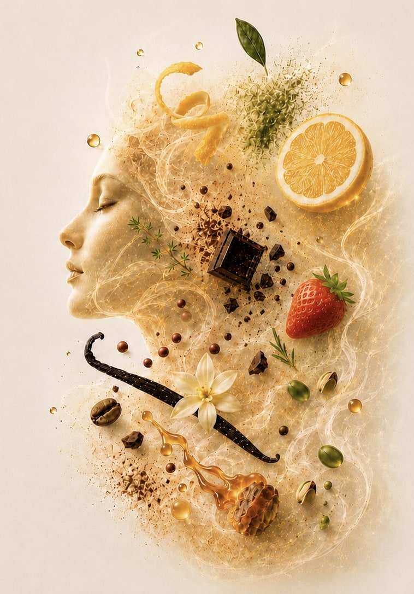
Science made human
We decode how the human body perceives and responds to flavor, then apply that understanding to create experiences that are meaningful, memorable and better-for-you.
Our science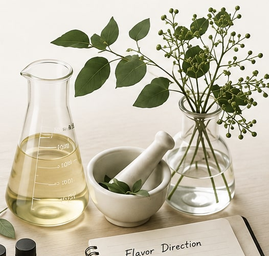
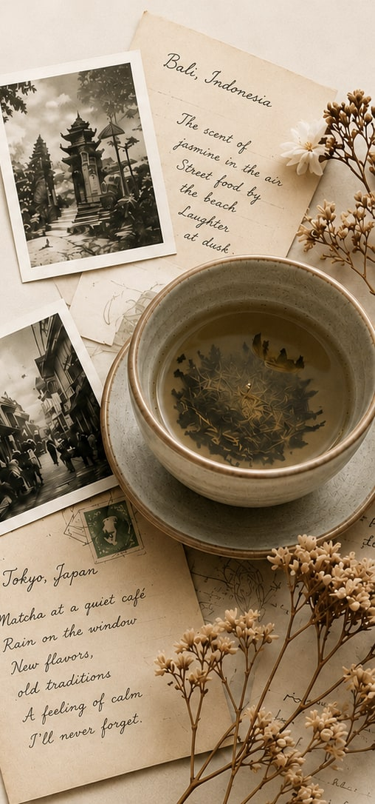
Rooted in human experience
Flavor carries history, emotion and belonging.
The foods and drinks we love are never only about ingredients. They carry places, people and moments that stay with us.
Every sip can carry a story.
The multisensory truth
What people taste is not a single sensation. It is a conversation between many senses.
Explore the scienceThe deliciousness equation
Each element plays a vital role. But deliciousness emerges only when they work in harmony—in the right balance, at the right moment, for the right person.
If it isn’t delicious, nothing else matters.
Flavor that stays
Some flavors disappear in seconds.
Some stay with us for a lifetime.
Flavor can carry childhood, travel, family, celebration and tradition. The most meaningful experiences are the ones people remember, return to and want to share.
Swipe or use arrow keys to explore
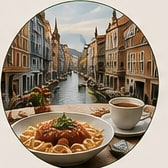
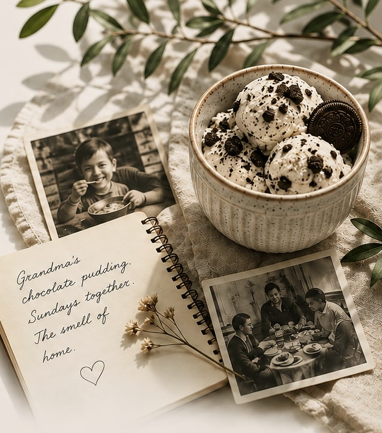
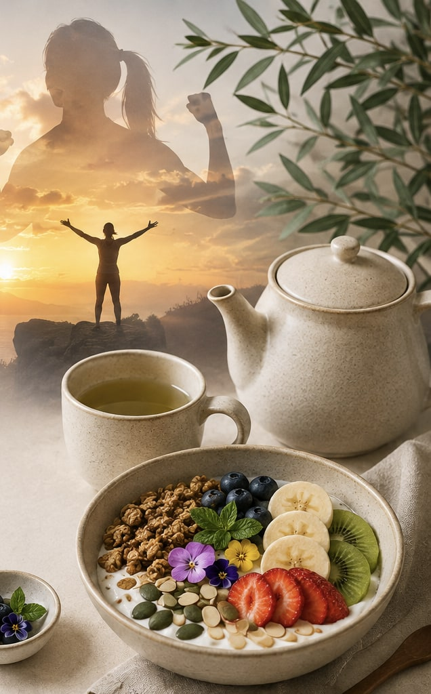
Wellbeing by design
When our senses are engaged, everyday moments can feel more balanced and uplifting. Pleasant sensory experiences can support emotional balance and overall wellbeing.
We design food and beverage experiences that make good moments more enjoyable, repeatable and meaningful.
Better choices, better experiences
This is where deliciousness meets wellbeing. Sensory science helps healthier habits feel natural by making better choices more desirable, satisfying and sustainable in daily life.
Better taste creates
better choices.
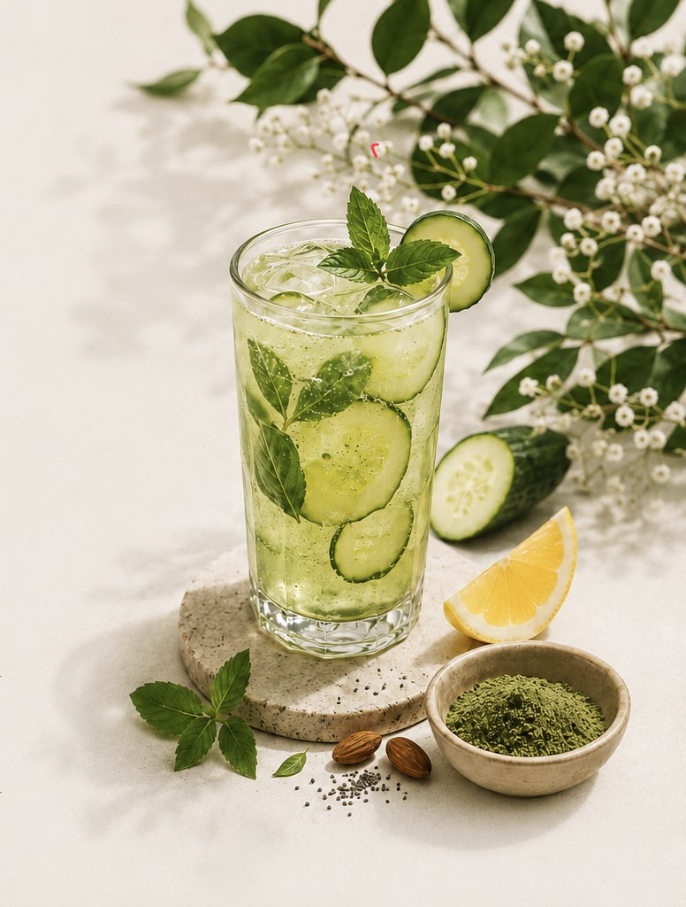
More than flavor
The most memorable food and beverage experiences are never only consumed. They are felt, remembered and desired again.
Great taste becomes a moment.
A moment becomes a memory.
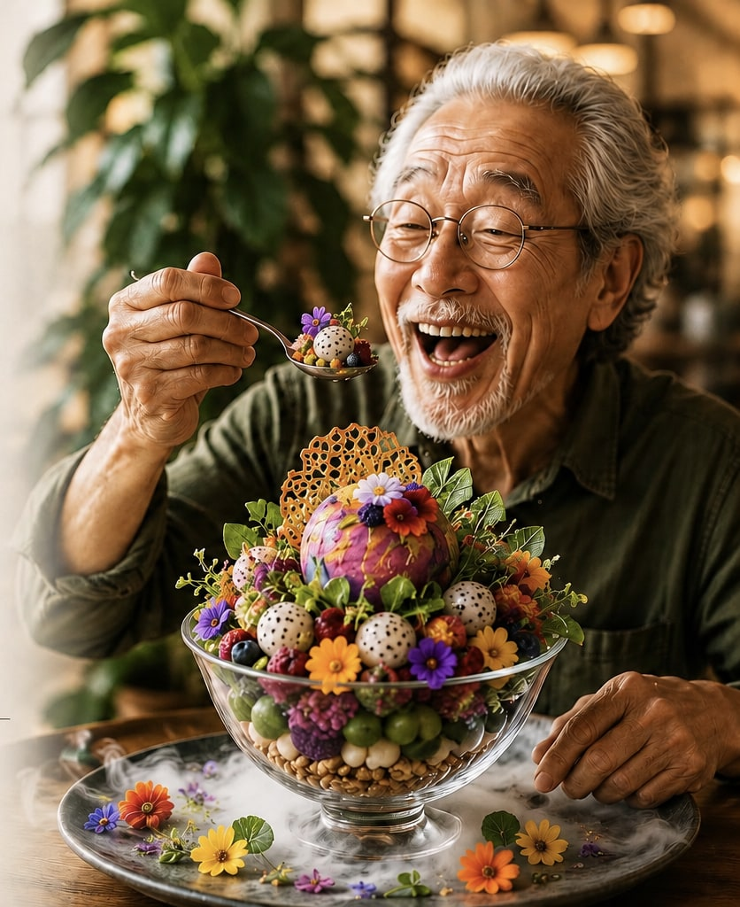
Stronger together
Building lasting value through insight, innovation and collaboration.
We work closely with you to understand your goals and co-create tailored flavor solutions.
Agile and customer-focused, we respond quickly to market changes and evolving needs.
Our experts provide application guidance and technical assistance at every step.
We invest in relationships that drive sustainable growth and shared success.
Our approach
We build lasting partnerships by connecting market insight, flavor design, technical support and ingredient innovation in one integrated approach.
Let’s partner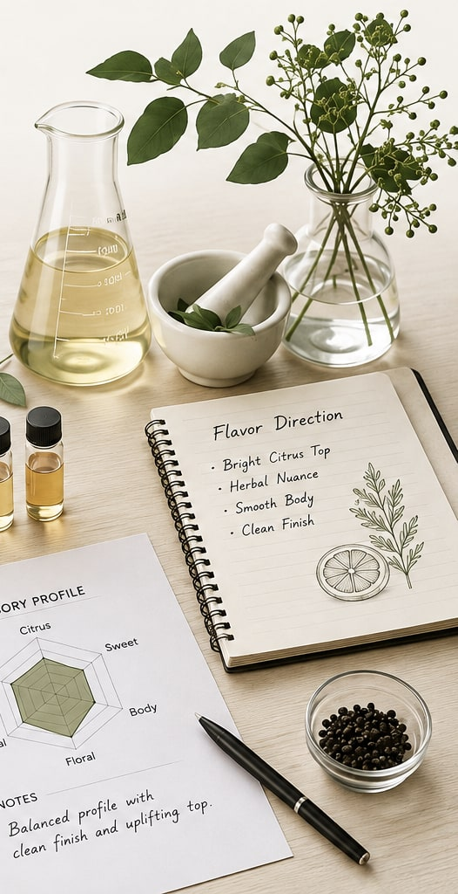
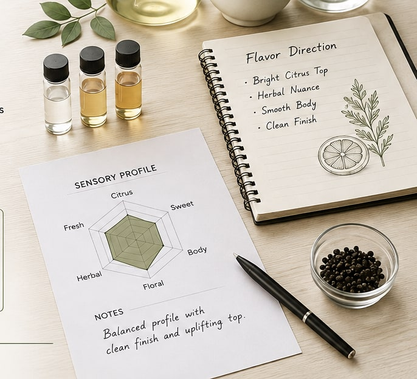
Solutions shaped around people
Swipe or use arrow keys to explore
Flavor-forward solutions for refreshing, functional and better-for-you beverages.
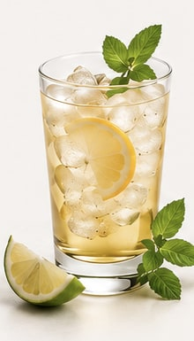
Creamy, clean-label flavors for dairy and plant-based applications.
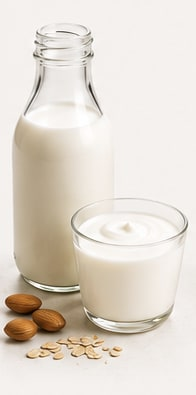
Bold and balanced flavors for savory foods, sauces and seasonings.
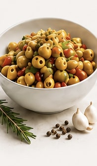
Delicious flavors for baked goods, chocolates, candies and sweet creations.
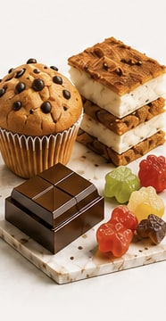
Natural extracts and citrus solutions crafted for purity, consistency and performance.
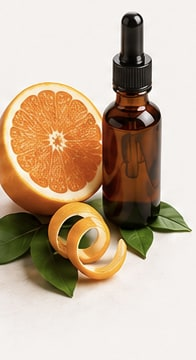
Science-backed ingredients supporting wellness, nutrition and performance.
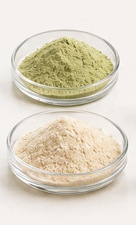
Tailored solutions and application support that bring your product vision to life.
From possibility to experience
Let’s shape the future of flavor—grounded in science, inspired by culture, and made for life.
Let’s create together